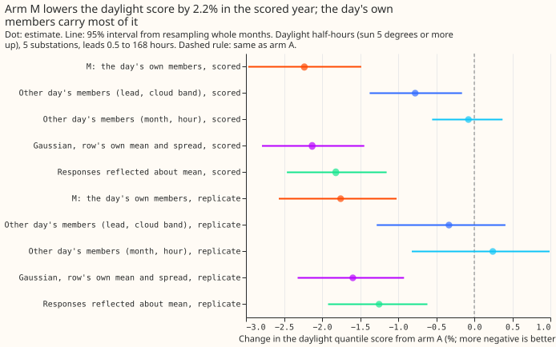
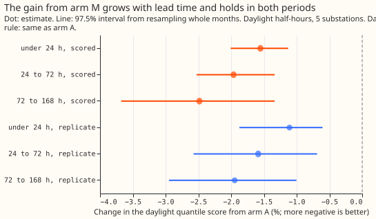
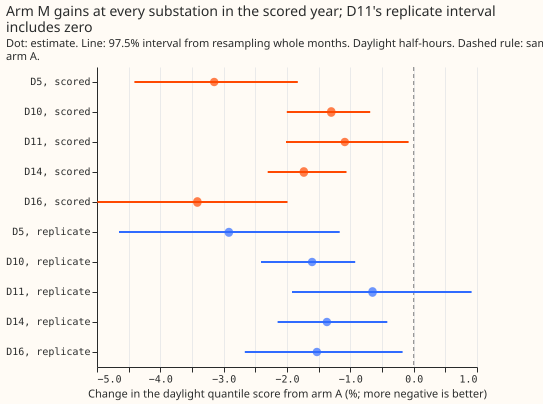

Experiment 187: ensemble members through the solar term, inside the best-guess stack
Running each of the 51 ensemble members through the solar part of the demand model still lowers
the daylight forecast score by about 2% in the full best-guess stack. About two thirds of that
gain needs the day's own members. The demand forecast's bands are quantiles of its error. Experiment
184 found that the disagreement between the 51
members of the European Centre for Medium-Range Weather Forecasts (ECMWF) ensemble about cloud
improves those bands in daylight (the sun 5 degrees or more above the horizon). A known-answer check
on a synthetic ensemble with a known response failed, so its verdict was capped at inconclusive.
The check required each member's solar response to fall as irradiance rises. At low sun the unit
photovoltaic (PV) shape, the output of a unit panel for a given irradiance, falls as irradiance
rises, so the check was too strict. Experiment 187 uses a check that the response follows the
member's own unit PV shape, which the synthetic ensemble passes on every row. We then re-scored the
same arms. The re-scoring reproduces experiment 184's numbers exactly, because the reference
forecast (arm A) already is the full best-guess stack: the convex demand model with a Kalman filter
on recent errors, a winter night offset, and a 14-day error profile (recipe R), with the band widths
of experiments 160 and 164. The score is the quantile score, twice the mean pinball loss over 11
quantiles, in points of effective capacity (percentage points of each substation's rated demand);
lower is better. D5, D9, D10, D11, D14, and D16 are anonymised substations. The replicate months are
the six even months of 2024-07 to 2025-06, and the scored year is 2025-07 to 2026-06. BG2 is the
blend of five models with a solar offset from experiment 87, the production-style reference.



- Arms and row set. A: reference (experiment 184's arm A, 2.7521 points over all rows in the
scored year). M: arm A's mean plus each member's solar response, with arm A's 11 quantile offsets
times one factor per lead band (0.95, 0.90, 0.90, 0.85) around each member, pooled over the 51
members. Row set
fold_a_daily_gap_v1, D5, D10, D11, D14, and D16 (D9 in no contrast), leads 0.5 to 168 hours, outside the hand-filtered switching events; scored year 2025-07-02 to 2026-06-29. Mean forecasts are experiment 155's monthly refits, so no contrast depends on the retraining schedule. Ensemble weather is the stored 51-member forecast of experiment 111, available at forecast time. - Re-registered gate G3'. The response is the fitted solar coefficient times the difference between the member's unit PV shape and the ensemble mean's, so it must be non-increasing in the member's unit PV shape. It holds on 1,058 of 1,058 daylight rows of the fake ensemble (the CAMS irradiance of 6 scored runs at D10 times 51 multipliers from 0.6 to 1.4; the 1,058 rows are the daylight half-hours of those runs). The multiplier-1 member's response is 2e-14 points and night responses are zero. The old irradiance-monotone check holds on 1,036 rows; all 22 failures are at elevations under 17 degrees, and all 1,002 rows at 17 degrees or more pass.
- Headline C1 (daylight, change from arm A, 95% interval). Scored year -2.23% (-2.97% to -1.48%), replicate months -1.76% (-2.57% to -1.02%). Night 0.00% in both periods, because the arm changes only daylight rows. The daylight q05-to-q95 coverage (nominal 0.90) is 0.894 for M against 0.854 for A in the scored year, and 0.901 against 0.871 in the replicate months. The rule is met in both periods.
- Absolute scores (quantile score). Scored year, daylight A 3.632, M 3.551; night 1.981; all rows A 2.752, M 2.715. Replicate months, daylight A 3.453, M 3.392; night 2.027.
- By lead band (daylight, A to M, scored year). Under 24 hours 3.095 to 3.047 (-1.55%); 24 to 72 hours 3.343 to 3.278 (-1.96%); 72 to 168 hours 3.906 to 3.809 (-2.48%); 12 to 36 hours 3.227 to 3.169 (-1.82%).
- By clear-sky band of the ensemble-mean irradiance (scored year). Overcast (under 0.4) 3.127 to 3.094 (-1.04%); partly cloudy (0.4 to 0.7) 3.861 to 3.756 (-2.71%); clear (0.7 and over) 3.483 to 3.417 (-1.87%).
- By substation (daylight, A to M, scored year). D5 5.294 to 5.127 (-3.15%); D10 3.983 to 3.931 (-1.30%); D11 2.794 to 2.763 (-1.09%); D14 2.855 to 2.805 (-1.73%); D16 3.354 to 3.240 (-3.42%). Without D5, -1.89%. In the replicate months D11 is -0.65% with an interval that includes zero (-1.92% to +0.91%).
- Placebo shares (the percentage of M's daylight gain that each placebo recovers; scored year, replicate months). Members from another day of the same substation, month, and hour band (MP): 3%, -14%. Members from another day of the same lead day and cloud band as well (the stricter shuffle): 35% (-0.78%), 19% (-0.33%). A Gaussian with each row's own mean and spread of the responses: 95% (-2.13%), 91% (-1.60%). The responses reflected about their mean, which reverses the skew: 81% (-1.82%), 71% (-1.25%). So 65% (81%) of the gain needs the day's own members, and the size of the spread across the members carries nearly all of the gain, with the skew worth about 0.3 percentage points of the score change.
- Gap to BG2 on the sunniest third of daylight half-hours (mean absolute error of the median, five substations, 74,728 half-hours). Arm A +0.044 MW (95% interval +0.007 to +0.072); M +0.026 MW (-0.020 to +0.059). Without D5: A +0.007, M -0.007 MW. At D5: A +0.202, M +0.170 MW, so D5 still holds most of what remains.
- Tails (daylight, scored year; coverage / pinball loss). A: q01 0.027 / 0.265, q05 0.078 / 0.907, q95 0.933 / 0.924, q99 0.979 / 0.262. M: 0.013 / 0.230, 0.053 / 0.837, 0.947 / 0.880, 0.986 / 0.243. The gain is largest in the lower tail.
- Checks. The median forecast minus the mean forecast at 12 to 36 hours is exactly 0.000 for arm A, and -0.14 (D5), -0.05 (D10), -0.05 (D11), -0.05 (D14), and -0.05 (D16) points for M, because the members' skewed responses pull the mixture median below the mean. The mean forecast's own daylight error changes by -0.13% (-0.45% to +0.27%) for M, the same direction as the score. No trigger from the audit rules fired in this experiment: no control failed, the quantile-score and mean-error contrasts agree in direction, the earlier null of experiment 169 was explained in experiment 184, and the control that should change nothing (the rescaling without members, MR) moves the score by -0.23% against a half-width of 0.26. The re-scoring reproduces experiment 184's numbers, so experiment 184's Opus audit (no leakage found, month-block bootstrap checked, C1 negative leaving out any substation or month) covers the same stored arrays.
- Caveats. Experiment 187 is a re-derivation: experiment 184's scores for M were known before the rule was registered, so only the gate and the placebo shares are new. The member pass adds a 51-member solar response and four fitted factors to the weather layer. The replicate months hold 6 months, so their intervals are wide. D5 and D16 give the largest gains; D11's replicate interval includes zero.
- Prediction check. Every part held except one. G3' passed on every row. Both intervals lie wholly below zero with point estimates under -1%. Night moved by 0.00%. Coverage lies within 0.02 of 0.90. The stricter-shuffle share fell in the predicted 25% to 45% range in the scored year (35%) but below it in the replicate months (19%).
- Optional neural arm. Not run. A Gaussian with the row's own mean and spread already recovers 95% of the gain, so a learned scale on the spread has about 0.1 points of headroom in daylight.
- What to try next. (1) Replace the 51-member pass by a per-half-hour mean and standard
deviation of the member responses, computed from the ensemble mean and the member irradiance
spread, and test whether it keeps the gain (prediction that could fail: it keeps at least 80% of
-2.2%). (2) Check the production cost of the member pass. (3) Test the member pass on the
curtailment-cost metric of
studies.node_curtailment, because the gain is largest in the lower tail.